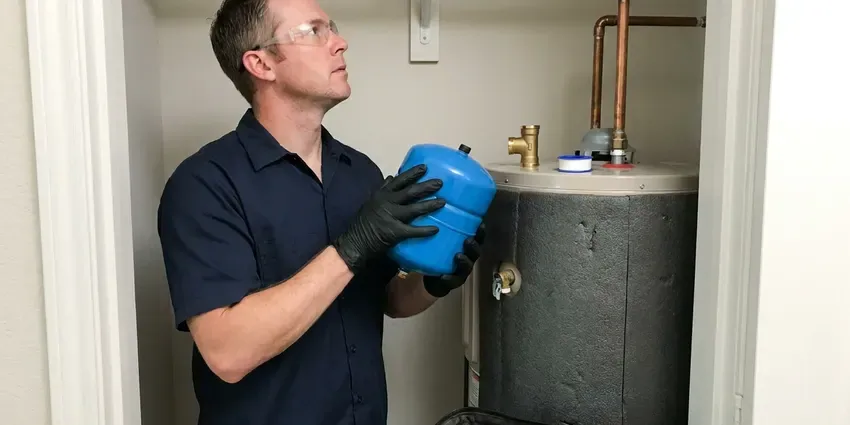

Tankless Water Heater Installation in New Haven, CT
We install Rinnai, Navien, Noritz and Rheem tankless water heaters in New Haven, CT with correct sizing, clean venting and isolation valves for easy descaling.
- Energy-Saving Solutions
- Upfront Pricing
- Reliable Local Plumbers
- Energy Savings Possible

Get a Tankless Water Heater in New Haven, CT.
Call now for a flat-rate tankless installation quote that includes gas, venting and water connections.
Expert Tankless Water Heater Installation in New Haven, CT
GLV Plumbing provides professional tankless water heater installation across New Haven, helping homeowners get better hot water efficiency. Unlike traditional tanks, these compact units heat water on demand, saving space and cutting energy waste.
Our expertise includes:
- Accurate sizing and model selection for your home.
- Isolation valve kits and scale filters for hard water protection
- Installation of gas and electric tankless units.

Additional Plumbing Installation Services in New Haven, CT
We install water heaters, pumps, lines, and fixtures across New Haven, CT with precision workmanship that meets every local code.


Customers
Why Choose GLV Plumbing for Tankless Water Heater Installation in New Haven, CT?
A tankless water heater only performs if it is sized, vented and supplied correctly. We do the math on flow rate, temperature rise and gas load before suggesting a model.
- Energy Efficiency, Tankless units heat water only when needed, which can lower your utility bills compared to traditional storage tanks.
- Longer Lifespan, Tankless water heaters typically last longer than conventional models, offering a better long-term investment.
- Accurate Sizing, We match the unit's flow rate to your fixtures and incoming water temperatures.
Citywide Coverage
We understand that hot water is essential, which is why our technicians are dispatched across New Haven every day. You can count on GLV Plumbing to be there when you need expert tankless water heater installation, no matter your exact location.
Experienced Team
Each GLV Plumbing technician is a specialist in modern plumbing, including the fine details of tankless systems. We take pride in precise installations that homeowners in New Haven can depend on for years to come.
Safety-First Approach
Safety and code compliance matter most on every tankless water heater installation we perform. Our plumbers closely follow manufacturer guidelines and local Connecticut plumbing codes, including proper venting, gas line and electrical connections.
Trusted Certified New Haven Plumbing Services Professionals
At GLV Plumbing, we take pride in providing licensed, certified plumbing services throughout New Haven, CT. Backed by recognized industry credentials, our experienced plumbers combine technical skill with genuine customer care. Whether it is repair, installation, or maintenance, we follow strict safety and quality standards to deliver lasting results you can trust.
Call Us Now PHCC Plumbing Contractor Recognition
PHCC Plumbing Contractor Recognition Better Business Bureau (BBB) Accreditation
Better Business Bureau (BBB) Accreditation Angi Certified Pro
Angi Certified Pro ISO 9001 Quality Management Certification
ISO 9001 Quality Management CertificationEfficient Tankless Water Heater Installation Services in New Haven, CT
Commercial Tankless Water Heater Services in New Haven, CT
Businesses in New Haven benefit from the continuous hot water supply and compact design of commercial tankless water heaters. From restaurants to hair salons, we install robust systems designed to meet high-demand commercial needs. GLV Plumbing understands the requirements for commercial installations, including larger capacity units and commercial plumbing codes, so your business never runs short of hot water.

Rinnai, Navien and Noritz Installation in New Haven, CT
We install leading tankless brands including Rinnai, Navien, Noritz and Rheem. Rinnai offers a wide model range and strong parts support, while Navien condensing units often include built-in recirculation pumps. Noritz is known for durable commercial-grade heat exchangers. We help you compare models by flow rate, efficiency and warranty.
Recirculation Systems for Tankless Heaters in New Haven
Tankless heaters can take a few extra seconds to deliver hot water to distant fixtures. A recirculation pump or dedicated return line keeps hot water close to faucets, cutting wait time and water waste. Some units have built-in pumps with smart scheduling. We design the system to suit your plumbing layout and usage patterns.
Commercial Tankless Water Heater Installation in New Haven
Businesses often have higher and more consistent hot water demands than homes. GLV Plumbing provides commercial tankless water heater installation, sizing systems to meet the needs of restaurants, salons or other commercial spaces. We understand the value of minimal disruption to your operations during installation, ensuring a quick and professional setup in New Haven.
Residential Tankless System Upgrades in New Haven
Upgrading your traditional hot water tank to a tankless system in New Haven can significantly improve efficiency and comfort. We assess your home's hot water demands, existing plumbing and utility connections to recommend the best tankless model for your household size and usage patterns. Our team manages the entire conversion, including the safe removal and disposal of your old water heater, minimizing disruption to your daily routine.
Electric Tankless Water Heater Installation in New Haven, CT
Electric tankless water heaters are an excellent option for homes in New Haven where natural gas is not available or preferred. These units are often smaller, simpler to vent and can be installed closer to the point of use. GLV Plumbing provides professional electrical sizing to make sure your home's panel can safely support a new electric tankless unit, offering consistent hot water without the need for a gas line.
Tankless Water Heater Relocation in New Haven
Sometimes the best spot for a tankless water heater is not where your old tank was located. For homeowners in New Haven looking to free up space or improve access, GLV Plumbing offers professional tankless water heater relocation. This can involve rerouting gas or water lines and possibly electrical work, all handled with care and to local codes by our experienced team.

Tank to Tankless Conversions in New Haven
Converting from a tank requires more than swapping units. A 40 gallon tank heater uses roughly 40,000 BTU, while a whole-home tankless unit may need up to 199,000 BTU, so the gas line usually needs to be upsized. Venting changes from a metal flue to PVC or stainless, and the unit moves to a wall location. We remove and dispose of your old tank and patch the old flue penetration.
Tankless Water Heater Installation Near Me in New Haven, CT
If you are searching for tankless water heater installation near me, our local team can visit, measure and give you a written quote. We check your gas meter, line size and venting options during the same visit. Many installs are scheduled in just a few days.
Our local presence means faster response times and a commitment to serving our neighbors in New Haven. You can trust GLV Plumbing to provide prompt, professional and courteous service for all your tankless water heater needs, right in your neighborhood.
GLV Plumbing at a Glance
- Fully licensed plumbing team covering New Haven, CT
- Same-day appointments and 24/7 emergency response
- Clear written estimates, no hidden fees
- 4.8-star rated by 946+ Connecticut customers
New Haven Map
New Haven Information
- Population
- 135,319
- Area codes
- 203/475/860
- Service area
- New Haven and communities within 40 miles
- Nearby
- West Haven, Milford, Bridgeport, Meriden
Installing a tankless water heater in New Haven, CT is a sound investment through warm and chilly seasons alike, delivering consistent hot water without the energy waste of heating a large tank year-round.
Expert Services
Trust our professionals for reliable GLV Plumbing solutions in New Haven, CT.
Our Specialized Plumbing Services in New Haven, CT
At GLV Plumbing, we provide a complete range of plumbing services across New Haven, CT. From leak detection to full system installations, our team ensures fast, precise, and affordable service for both residential and commercial properties. Explore our core services below:


How Our Tankless Water Heater Installation Process Works in New Haven, CT
Our tankless water heater installation process at GLV Plumbing is designed to be straightforward and efficient, from your initial inquiry to enjoying endless hot water.
Request a Quote
Call (860) 487-7330 to schedule a site visit. We assess your fixtures, gas supply and venting options, then give you a detailed quote.
Install and Upgrade
We remove your old heater, upsize gas lines if needed and mount the new unit. Venting, water connections and isolation valves are installed to manufacturer specs.
Test and Train
We fire the unit, check gas pressure and test hot water at several fixtures. Then we show you how to flush the system and register your warranty.
Frequently Asked Questions About Tankless Water Heater Installation in New Haven
Most gas tankless installations cost $3,000 to $6,500 including the unit, labor, venting and typical gas line upgrades. Electric units can be less, though panel upgrades can add $1,000 to $3,000.
To maintain efficiency and extend the lifespan of your tankless unit, annual flushing to remove mineral buildup is recommended, especially in areas with hard water. Checking and cleaning the air filter (for gas models) and inspecting connections are also part of regular maintenance. GLV Plumbing offers comprehensive maintenance services.
Yes, installing a new tankless water heater or replacing an existing one in New Haven usually requires a plumbing permit. This ensures the installation meets local building and safety codes. GLV Plumbing handles all necessary permitting paperwork for you.
Fluctuating water temperature, error codes, reduced flow and unusual noises are common signs. Scale buildup is often the cause in hard water areas.
With annual descaling, tankless units often last 15 to 20 years. Skipping maintenance in hard water areas can shorten that significantly.
No, we strongly advise against DIY tankless water heater installation. These systems involve complex connections for gas, water and electricity, along with specific venting requirements. Improper installation can lead to safety hazards, void warranties and costly repairs. Always use a licensed professional.
Sizing a tankless water heater depends on your household's peak hot water demand, measured in gallons per minute (GPM), and the temperature rise needed. Our plumbers will count the hot water fixtures in your home and review your usage patterns to recommend the right GPM and BTU rating for your needs in New Haven.
Yes. Tankless water heaters are an excellent choice for Connecticut homes. Their energy efficiency can help manage utility costs, especially during peak demand. The compact size is ideal for the smaller utility closets common in many houses, and the endless hot water suits busy families throughout the year, regardless of the climate.
What People Are Saying About Our Plumbing Experts?

Laura S.
I scheduled a water heater replacement, and the team made the process smooth and affordable. The new unit works perfectly, and they cleaned up after completing the job.
Water Heater Replacement · Middletown, CT
Mark T.
When our office needed drain cleaning, GLV Plumbing provided quick, reliable service. The plumber arrived on time and made sure every drain flowed perfectly before leaving. Very satisfied.
Drain Cleaning · West Haven, CTSofia M.
Two new toilets installed in one visit, no mess left behind, and the tech even adjusted a faucet he noticed was dripping. Fair pricing and really friendly.
Toilet Installation · New Haven, CT
James P.
Our commercial plumbing system had a leak under the sink, and GLV Plumbing handled it professionally. The plumbers arrived quickly and restored everything without disruption to our customers.
Commercial Plumbing · Waterbury, CT
Patricia H.
We had a slab leak that two other companies could not find. GLV Plumbing located it in under an hour, explained our options, and the price matched the quote to the dollar.
Slab Leak Repair · Bridgeport, CT
Daniel K.
A pipe burst at 11 pm and they actually answered. The plumber showed up within the hour, shut everything down, and had us back to normal the next morning. Could not ask for more.
Emergency Plumbing · Milford, CT